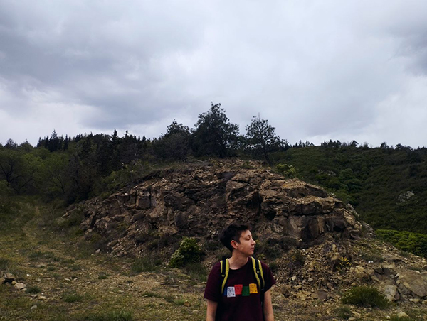

Полиграфическая вёрстка
Полиграфическая вёрстка — моё хобби, переросшее в профессиональную деятельность.
С 2011 года по настоящее время являюсь успешным фрилансером. Сотрудничаю со множеством частных лиц, организаций, книжных издательств.
Занимаюсь вёрсткой многостраничников: газет, журналов, книг, справочников, каталогов, буклетов, брошюр, технической документации, переводов и прочих печатных и электронных изданий.